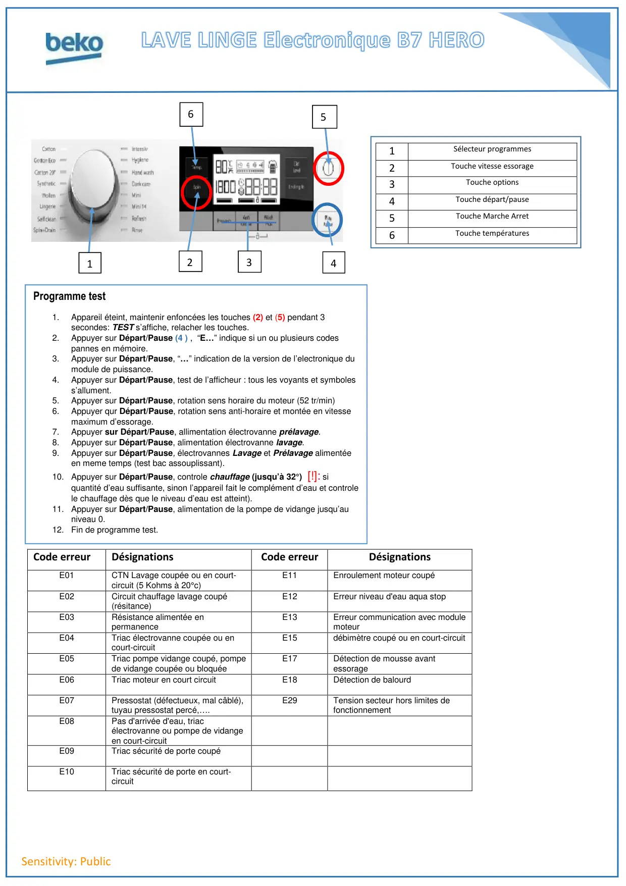

ProgrTest lave linge B13 HERO

Sensitivity: PublicCode erreurDésignationsCode erreurDésignationsE01CTN Lavage coupée ou en court-circuit (5 Kohms à 20°c)E11Enroulement moteur coupéE02Circuit chauffage lavage coupé(résitance)E12Erreur niveau d'eau aqua stopE03Résistance alimentée enpermanenceE13Erreur communication avec modulemoteurE04Triac électrovanne coupée ou encourt-circuitE15débimètre coupé ou en court-circuitE05Triac pompe vidange coupé, pompede vidange coupée ou bloquéeE17Détection de mousse avantessorageE06Triac moteur en court circuitE18Détection de balourdE07Pressostat (défectueux, mal câblé),tuyau pressostat percé,….E29Tension secteur hors limites defonctionnementE08Pas d'arrivée d'eau, triacélectrovanne ou pompe de vidangeen court-circuitE09Triac sécurité de porte coupéE10Triac sécurité de porte en court-circuit1Sélecteur programmes2Touche vitesse essorage3Touche options4Touche départ/pause5Touche Marche Arret6Touche températures136542Programme test1.Appareil éteint, maintenir enfoncées les touches (2) et (5) pendant 3secondes: TEST s’affiche, relacher les touches.2.Appuyer sur Départ/Pause (4 ) , “E…” indique si un ou plusieurs codespannes en mémoire.3.Appuyer sur Départ/Pause, “…” indication de la version de l’electronique dumodule de puissance.4.Appuyer sur Départ/Pause, test de l’afficheur : tous les voyants et symboless’allument.5.Appuyer sur Départ/Pause, rotation sens horaire du moteur (52 tr/min)6.Appuyer qur Départ/Pause, rotation sens anti-horaire et montée en vitessemaximum d’essorage.7.Appuyer sur Départ/Pause, allimentation électrovanne prélavage.8.Appuyer sur Départ/Pause, alimentation électrovanne lavage.9.Appuyer sur Départ/Pause, électrovannes Lavage et Prélavage alimentéeen meme temps (test bac assouplissant).10. Appuyer sur Départ/Pause, controle chauffage (jusqu’à 32°) [!]: siquantité d’eau suffisante, sinon l’appareil fait le complément d’eau et controlele chauffage dès que le niveau d’eau est atteint).11. Appuyer sur Départ/Pause, alimentation de la pompe de vidange jusqu’auniveau 0.12. Fin de programme test.
1 / 1